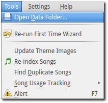
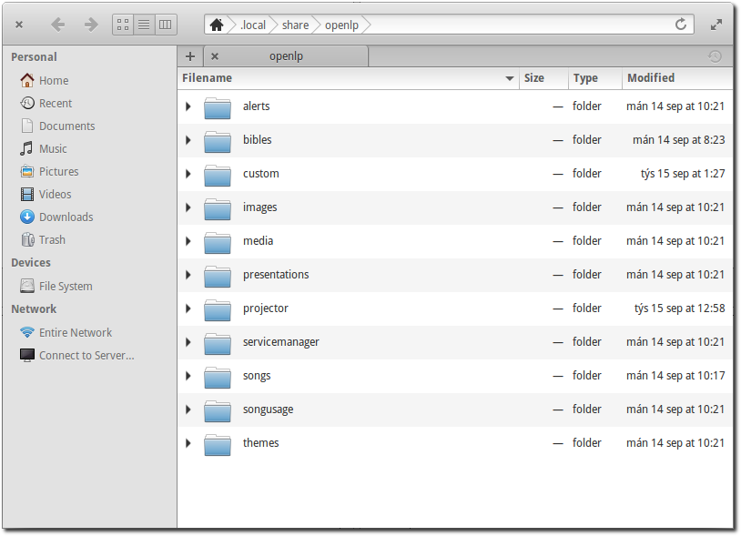
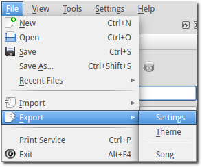
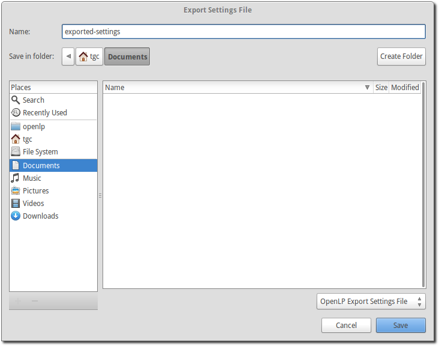
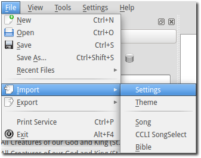
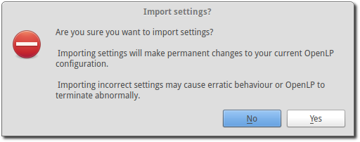
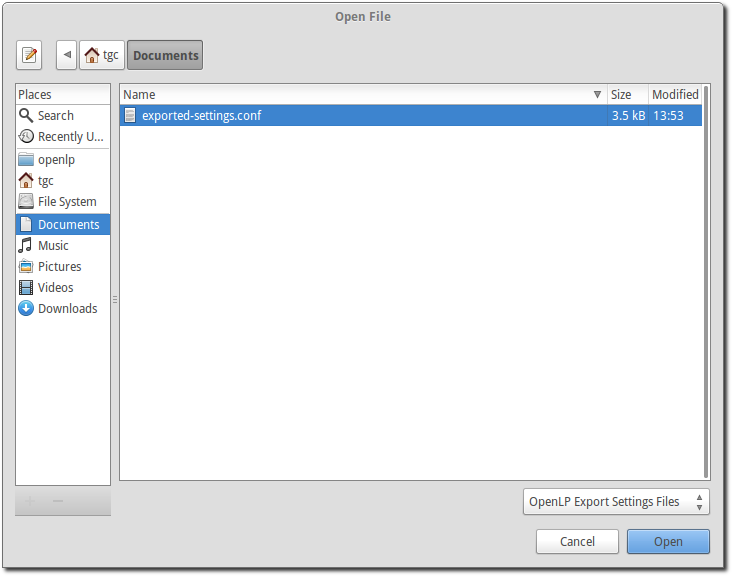
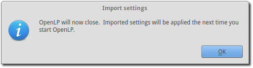

Backing up OpenLP
Backing up data files
OpenLP gives you the ability to directly access your data files making your data easy to back up. Using the menu items at the top click on .
You will be presented with the folder where all of the OpenLP data files are stored in their individual folders.
You can select an individual folder or all of the folders and copy your data to your choice of media or a flash drive. This is also an easy way to get all of your data onto another computer that is running OpenLP.
You can restore your data folders and files by copying them back into your data folder . You will overwrite all of your original data with the data you are copying back into the folder.
Warning: Once you overwrite your data there is no way to retrieve your original data.
Note: If you copy your data files back into the OpenLP data folder you must shut down OpenLP and restart it to see the changes.
Export Settings
OpenLP stores all of the configuration settings in a configuration file for Linux and OS X or the Window’s registry. Once you have OpenLP configured to your liking you should backup your settings. This is done from the menu item at the top by clicking on .
You will then be presented with a window to choose what to name and where you want to save your configuration file. Click Save.
Import Settings
You can import OpenLP configuration settings from a previous backuped up configuration file or from an exported file from another computer. This is done from the menu item at the top. by clicking on .
Please read the complete warning and click Yes to continue or No to cancel.
You will then be presented with a window to find and restore your saved configuration file. Click on the configuration file and click Open.
Your configuration settings will be imported. Click on Ok to restart OpenLP.
